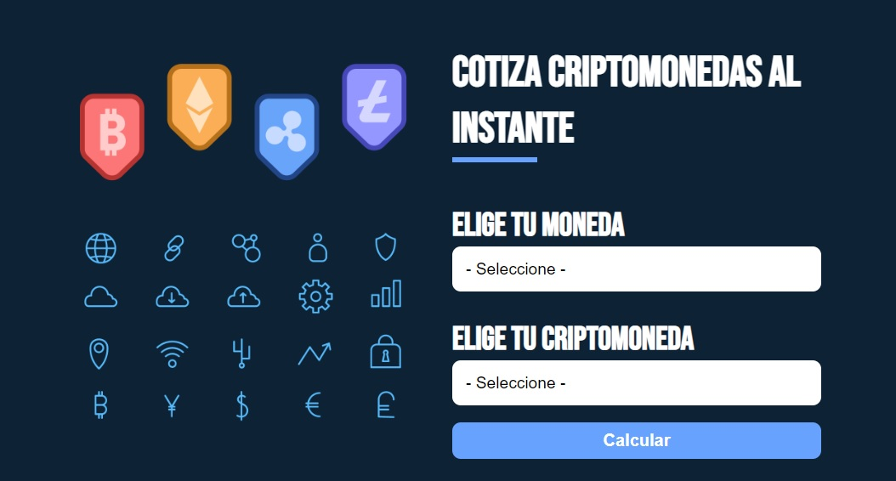

Cotizador Criptomonedas
Esta es una aplicación desarrollada en React JS, que permite seleccionar las diez Criptomonedas más utilizadas en el mundo y cotizarlas, en tiempo real, trasnformandolas a la moneda de tu preferencia.
Te mostrará el valor actual, el más bajo, el más alto, y la última actualización.
Te invito a probarla.